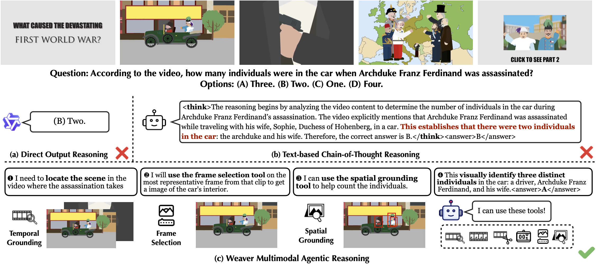
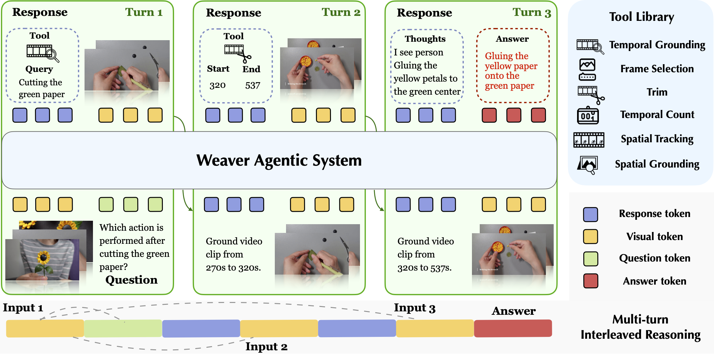
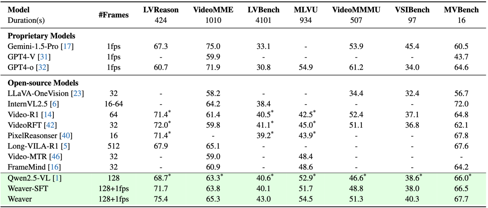
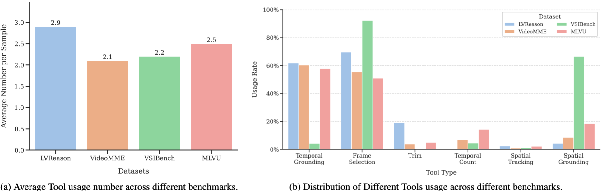
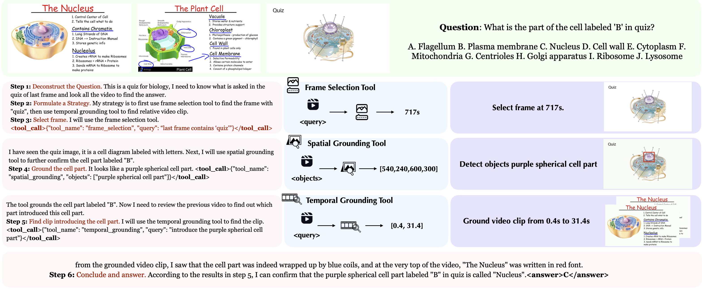

Video reasoning constitutes a comprehensive assessment of a model’s capabilities, as it demands robust perceptual and interpretive skills, thereby serving as a means to explore the boundaries of model performance. While recent research has leveraged text-centric Chain-of-Thought reasoning to augment these capabilities, such approaches frequently suffer from representational mismatch and restricted by limited perceptual acuity. To address these limitations, we propose Weaver, a novel, end-to-end trainable multimodal rea- soning agentic system. Weaver empowers its policy model to dynamically invoke diverse tools throughout the reasoning process, enabling progressive acquisition of crucial visual cues and construction of authentic multimodal reason- ing trajectories. Furthermore, we integrate a reinforcement learning algorithm to allow the system to freely ex- plore strategies for employing and combining these tools with trajectory-free data. Extensive experiments demonstrate that our system, Weaver, enhances performance on several complex video reasoning benchmarks, particularly those involving long videos.




@article{shi2026weaver,
title={Weaver: End-to-End Agentic System Training for Video Interleaved Reasoning},
author={Shi, Yudi and Di, Shangzhe and Chen, Qirui and Wang, Qinian and Cai, Jiayin and Jiang, Xiaolong and Hu, Yao and Xie, Weidi},
journal={arXiv preprint arXiv:2602.05829},
year={2026}
}